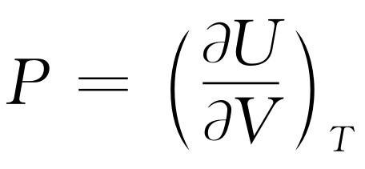
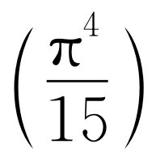
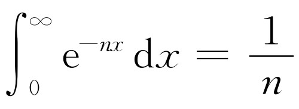
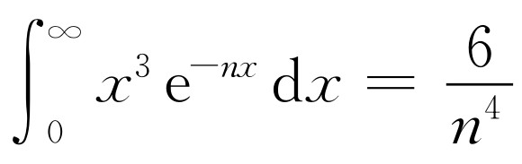
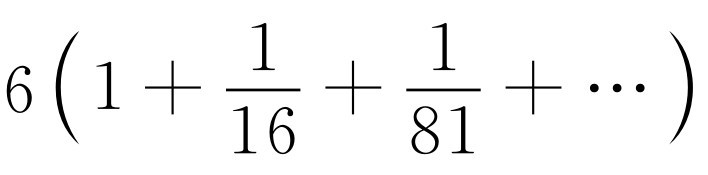

热力学的应用是一门相当困难和复杂的课题。
在本课程中我们不宜在应用方面过分深入。当然，热力学对工程师和化学家来说极为重要，对这方面感兴趣的人可以在物理化学或工程热力学中学到许多有关应用的内容。关于热力学也有一些好的参考书，如泽曼斯基（Zemansky）的《热与热力学》，可以从中学到更多的有关内容。在大英百科全书（第十四版）的热力学与化学热力学条目中，以及化学条目的物理化学，蒸发，气体液化等段落中人们也可以找到很好的论述。
热力学之所以复杂，是因为在描写同一件事情时存在着许多方式。如果我们要描写气体的行为，既可以说压强取决于温度和体积，也可以说体积取决于压强和温度。对于内能U 而言，假如选择温度和体积为变量，我们可以说内能取决于温度和体积——但是我们也可以说它取决于温度和压强，或压强和体积，等等。在前一章中，我们讨论了另一个温度和体积的函数，并称之为熵S 。当然，我们也可以建立起这些变量的许多其他我们所想要的函数：如（U -TS ）是温度和体积的函数。这样，我们就有许多不同的物理量，它们可以是许多不同变量组合而成的函数。
为了使本章的讨论简单起见，我们决定一开始就用温度和体积作为独立变量。化学家则使用温度和压强，因为在化学实验中这两个量较易测量和控制。但是在本章中我们从头至尾都用温度和体积，除了在一个地方我们将看一下怎样把它变换为化学家的变量系统。
这样，我们首先将只考虑一种独立变量系统——温度和体积。其次，我们将只讨论两个有关的函数：内能和压强。所有其他函数都可由此推导出来，所以不必讨论它们。即使作了这些限制，热力学仍是相当困难的课题，但已不是那么难以对付了！
我们先复习一下数学。如果一个量是两个变量的函数，那么考虑它的微商概念时要求比只有一个变量的情况更小心一些。所谓压强对温度的微商是什么意思呢？当然，随着温度变化而引起的压强变化部分地依赖于当T 改变时体积的变化。在使对T 的微商这一概念具有确切意义之前，必须指明V 的变化。例如，我们可以问，如果V 保持不变，P 对T 的变化率有多大。这个变化率就是通常写为dP /dT 的普通导数。习惯上我们使用一个特殊符号∂ P /∂ T ，以便提醒我们P 除了取决于T 外，还取决于另一个变量V ，而此时另一个变量V 保持为常数。我们将不仅用符号∂使人们注意另一变量保持不变的事实，而且还把这个保持不变的变量写成下标：（∂ P /∂ T ） V 。由于只有两个独立变量，这种记法是多余的，但它将使我们易于搞清楚热力学中的偏微商。
假定函数f （x ，y ）取决于两个独立变量x 和y 。把y 看成常量后，（∂ f /∂ x ） y 就表示以通常方法求得的普通微商
类似地，我们定义
例如，设f （x ，y ）=x 2 +yx ，则
我们可以把这个概念推广到高阶微商：∂ 2 f /∂ y 2 或∂ 2 f /∂ y ∂ x 。后一个记号表示先把y 看成常数，求f 对x 的微商，然后再把x 看成常数，把结果对y 求微商。微商的实际次序是不重要的
我们要计算当x 变到x +Δx 以及y 变到y +Δy 时f （x ，y ）的改变量Δf 。下面一律假设Δx 和Δy 是无穷小量
最后的式子是用Δx 和Δy 表示Δf 的基本关系式。
举一个利用这个关系式的例子，我们来计算当温度由T 变到T +ΔT ，体积由V 变到V +ΔV 时内能U （V ，T ）的变化。利用式（45.1），可写出
上一章我们发现当在气体中加进热量ΔQ 时内能变化ΔU 的另一个表示式
ΔU =ΔQ -P ΔV .（45.3）
比较式（45.2）和式（45.3），一开始人们可能会猜想 ，但这是不正确的。为了得到正确的关系，我们先假设在保持体积不变，即ΔV =0时加入气体一些热量ΔQ 。由ΔV =0，从式（45.3）可知ΔU =ΔQ ，而式（45.2）告诉我们ΔU =（∂ U /∂ T ） V ΔT ，所以（∂ U /∂ T ） V =ΔQ /ΔT 。比值ΔQ /ΔT 是在体积不变时为了使温度改变一度所须加入到物质中的热量，并称为定容比热 ，用符号C V 表示。这样，我们就论证了
现在，我们再给气体加入一些热量ΔQ ，但这一次保持T 不变而让体积改变ΔV 。在这种情况下的分析比较复杂，但是我们可以利用上一章所介绍的卡诺循环，通过卡诺的论证来计算ΔU 。
图45-1是卡诺循环的压强-体积图。我们已经证明，在一个可逆循环中气体所做的总功是ΔQ （ΔT /T ），这里ΔQ 是当气体在温度T 下等温地从体积V 膨胀到V +ΔV 时所加入到气体中的热量。而T -ΔT 是在循环的第二步气体绝热膨胀时所到达的最终温度。现在我们要证明这个功也可以由图45-1中的阴影面积表示。在任何情况下，气体所做的功都是∫P dV。 当气体膨胀时，它是正的；当气体被压缩时，它是负的。如果我们画出PV 图，P 与V 的变化情况可以用一根曲线表示；每给定一个V 值，在这条曲线上就可找到对应的P 值。当体积从一个值变到另一个值时，气体所做的功∫P dV 是连接V 的初值和终值的曲线下的面积。当我们把这个想法应用到卡诺循环时，注意到气体所做的功的正负号，就可以看到作一个循环后气体做的净功正是图45-1中的阴影面积。
图45-1 卡诺循环的压强体积图。标有T 和T -ΔT 的曲线是等温线；较陡的曲线是绝热线。ΔV 是在恒定温度T 下给气体加入ΔQ 的热量所引起的体积改变。ΔP 是在恒定体积下温度从T 变为T -ΔT 所引起的压强改变
现在我们要从几何上算出阴影面积。图45-1表示的循环与上一章中所用的循环的差别在于，我们现在假定ΔT 和ΔQ 都是无穷小量。循环图中所示的绝热线和等温线非常靠近，当增量ΔT 和ΔQ 趋向于零时，在图45-1中用粗线画出的图形接近于一个平行四边形。这一平行四边形的面积正是ΔV ΔP ，这里的ΔV 是在温度不变时，对气体加入能量ΔQ 后体积的变化，而ΔP 则是等容情况下温度改变了ΔT 时压强的变化。只要承认阴影面积等于图45-2中包围在虚线中的面积，就不难证明图45-1的阴影面积就是ΔV ΔP ，虚线中面积与由ΔP 和ΔV 所包围的矩形的差别只在于加上和减去图45-2中相等的三角形面积。
图45-2 阴影面积=虚线所包围的面积=长方形面积=ΔP ΔV
现在我们来归纳一下迄今为止已论证的结果
方程式（45.5）表示卡诺论证的基本结果。全部热力学都能由式（45.5）及式（45.3）表示的热力学第一定律推导出。式（45.5）实质上就是第二定律；虽然它和卡诺原来的推导在形式上略有不同，因为他没有用到我们的温度定义。
现在我们可以着手计算（∂ U /∂ V ） T 。如果体积改变ΔV ，内能U 将改变多少？内能之所以改变，第一是因为加进了热量，第二是由于做了功。根据式（45.5），加进的热量是
而对物质所做的功是-P ΔV ，因此内能的变化ΔU 包括两部分
两边除以ΔV ，我们发现在T 不变的情况下，U 对V 的变化率是
在我们的热力学中，T 和V 是仅有的变量，P 和U 是仅有的函数，式（45.3）和式（45.7）是基本的方程，由此可推导出本课题的所有结果。
现在我们来讨论式（45.7）的意义，看看为什么它能回答在上一章中所提出的问题。我们考虑以下的问题：按照分子动理论，由于原子对活塞的碰撞，温度的增加显然会引起压强的增加。由于同样的物理原因，当让活塞往回运动时，就从气体中取出热量，为了保持温度不变，必须再加入热量。气体膨胀时会冷却，而在气体被加热时压强会增加。在这两种现象之间必定存在某种联系，而这种联系十分清楚地由式（45.7）给出。如果我们使体积保持固定而增加温度，压强就按（∂ P /∂ T ） V 的比率增加。与这个事实有关的是：如果我们增加体积，除非加入一些热量以保持温度不变，否则气体将冷却，而（∂ U /∂ V ） T 告诉我们为了保持温度不变所需要的热量。式（45.7）表示这两种效应之间的基本的内部联系。这就是当我们开始学习热力学时，曾经许诺要找到的关系。无需知道气体的内部机制，只要懂得不能造出第二类永动机，我们就可以推导出当气体膨胀时为了保持温度不变所需的热量与加热气体时压强变化之间的关系！
对于气体我们已经有了希望得到的结果，现在再来考虑橡皮带的问题。当把橡皮带拉长时，我们发现它的温度上升，而在加热橡皮带时，我们发现它会收缩。对一根橡皮带，给出与气体的方程式（45.3）同样关系的方程是什么？大体上来说情况如下：加进热量ΔQ 时，内能改变了ΔU ，并且做了某些功。唯一的差别是要以橡皮带所做的功-F ΔL 代替P ΔV ，这里F 是作用在带上的力，L 是带长。力F 是温度和带长的函数。把式（45.3）中的P ΔV 改为-F ΔL ，有
ΔU =ΔQ +F ΔL .（45.8）
比较式（45.3）和式（45.8），我们看到只要用一个字母代替另一个字母就可以得到橡皮带的方程。此外，如果以L 代替V ，-F 代替P ，我们所有关于卡诺循环的讨论都可以用到橡皮带上。例如，通过与方程式（45.5）进行类比可以立即推出为使长度改变ΔL 所需的热量
这个方程告诉我们，若保持带长不变而加热带子，我们可以根据把带子拉长一点点时为保持温度不变所需要的热量算出力增加多少。所以我们看到对气体和橡皮带两者，可以用同样的方程。事实上，如果我们写出
ΔU =ΔQ +A ΔB ，
这里A 和B 表示不同的量，如力和长度，压强和体积，等等，那么就可以通过分别以A 、B 代替P 、V ，应用在气体情况下所得到的结果。例如，考虑电池中的电势差或“电压”E 及流过电池的电荷ΔZ 。我们知道，一个可逆电池（如蓄电池）所做的功是E ΔZ 。（因为在功中不包括P ΔV 这一项，因而要求电池的体积不变。）我们来看看热力学能对电池内的性能说些什么。如果在式（45.6）中以E 代替P ，以Z 代替V ，就得到
式（45.9）说明在电荷ΔZ 通过电池时内能U 会发生变化。为什么ΔU /ΔZ 不简单地是电池的电压E 呢？回答是，在电荷通过电池时，真实的电池会发热。电池的内能之所以会发生变化，首先是因为电池在外电路上做功，其次是由于电池被加热。值得注意的是，第二部分又可以借助于电池的电压随温度的变化来表示。附带提一下，在电荷通过电池时，就会发生化学反应，式（45.9）为测量产生一种化学反应所需要的能量提供了一种别致的方法。我们所要做的一切只是制造一个能在反应中工作的电池，测量电压，再测定当电池中不流出电荷时电压随温度变化的关系！
我们已经假设电池的体积可以保持不变，因为我们在写出电池做的功为E ΔZ 时已忽略了P ΔV 这一项。但实际情况是要使体积保持不变在技术上是极其困难的。使电池保持在不变的大气压下要容易得多。为此，化学家不喜欢我们上面写下的任何方程：他们喜欢描述等压 下各种特殊性的方程。在本章开始时我们选择V 和T 为独立变量。化学家则喜欢用P 和T ，我们现在来考虑怎样把迄今为止我们得到的结果改换为化学家的变量系统。注意在下述处理中，由于要把变量从T 和V 变换到T 和P ，所以很容易引起混淆。
我们从式（45.3），即ΔU =ΔQ -P ΔV 出发，P ΔV 可以用E ΔZ 或A ΔB 代替。如果能用某种方式在最后一项以V ΔP 代替P ΔV ，那么就能变换V 和P ，这样化学家就会感到满意了。好，一个聪明人会注意到乘积（PV ）的微分是
d（PV ）=P dV +V dP ，
如果把这个等式加到式（45.3）中，就可得到
为了使结果看起来与式（45.3）相似，我们定义U +PV 为某个新的，称为焓的量H ，并写为
ΔH =ΔQ +V ΔP .
现在我们已经能够用下述规则：U →H ，P →-V ，V →P 来把我们的结果换成化学家的语言。例如，化学家用来代替式（45.7）的基本关系式是
现在，怎样换为化学家的变量T 和P 这一点应该清楚了。我们现在回到原来的变量上：本章的其余部分，T 和V 都是独立变量。
现在把我们已经得到的结果应用到几种物理状况中去。首先考虑理想气体。由分子动理论我们知道理想气体的内能只与分子的运动以及分子数有关，内能取决于T 而不是V 。如果改变V ，但保持T 不变，U 就不变，因此（∂ U /∂ V ） T =0，于是式（45.7）告诉我们对于理想气体
式（45.10）是一个可以告诉我们有关P 的情况的微分方程。我们用下述方式来处理偏微商：因为偏微商是在等容下求得的，我们可用普通微商代替偏微商，并为醒目起见，清楚地写出“V 不变”。这样式（45.10）就变为
由此积分可得
lnP =lnT +常数，V 不变
或
P =常数×T ，V 不变．（45.12）
我们知道，对于理想气体，压强等于
这与式（45.12）一致，因为V 和R 都是常数。但是，既然我们已经知道了结果，那么何必还要作这样的计算呢？这是因为我们利用了两种独立的温度定义 ！前面我们曾假设分子的动能正比于温度，这个假设定义了一种我们称之为理想气体的温标。式（45.13）中的T 是建立在这种理想气体温标上的。我们也把理想气体温标测得的温度称为动理 温度。以后，我们又以与任何物质完全无关的第二种方式定义了温度。从基于热力学第二定律的论证出发，我们定义了称之为“绝对热力学温度”T 的温标，这就是在式（45.12）中出现的T 。我们这里又证明了理想气体（根据理想气体的定义，它的内能与体积无关）的压强正比于绝对热力学温度。我们也知道压强正比于理想气体温标测得的温度。因此可以推断动理温度正比于“热力学绝对温度”。当然，这意味着，如果我们聪明的话，可以令两种温标一致。至少，在这一事例中，已经 将这两种温标选择成相互重合，即比例系数已选取为1。许多时候人们往往总是自找麻烦，但是这一次他们却使两种温标相等了！
液体的汽化是我们已经推得的结果的另一个应用。假如在一个汽缸中盛有一些液体，我们能够通过推动活塞来压缩它。我们可以问：“如果温度保持不变，压强将怎样随体积而变化？”换句话说，我们希望在PV 图上画出等温线。汽缸中的物质不是我们以前考虑过的理想气体；它可能处于液相或气相，或者两相共存。如果压力足够大，物质将凝结为液体。如果压缩得更厉害，体积只改变一点点，我们的等温线将随着体积的减小而迅速上升，如图45-3中左方所示。
如果把活塞向外拉以增加体积，压强将下降到液体开始沸腾的那一点为止，然后蒸气开始形成。如果我们继续向外拉活塞，所发生的是有更多的液体汽化。当汽缸中存在部分液体和部分蒸气时，两相达到平衡——液体的蒸发率与蒸气的凝结率相同。如果给蒸气以更多的空间，为了保持压力不变需要更多的蒸气，所以液体蒸发得稍多一些，但压强仍保持不变。在图45-3中曲线的平坦部分，压强不变，这个压强的数值称为温度T 时的蒸气压 。当体积继续增加时，将到达没有更多的液体可供蒸发的时刻。此时，如果使体积进一步膨胀，压强就会像普通气体那样下降，如PV 图上的右方所示。图45-3中的较低曲线是对应于稍低温度T -ΔT 的等温线。液相中的压强略有减少，因为在温度增加时液体膨胀（这是对大多数物质而言，而对近于冰点的水则并非如此），当然，在较低温度下蒸气压也较小。
我们现在把两条等温线平坦部分的端点连接（比如说用绝热线）起来形成一个循环，如图45-4所示。图中右下角的一个小尖角会造成一点小差别，我们将忽略它。我们来应用卡诺的论证，它告诉我们，为了使物质从液体变为蒸气所需加入的热量与物质在循环中所做的功有关。令L 为使汽缸中的物质汽化所需要的热量。用式（45.5）前面的那种论证就可知道L （ΔT /T ）=物质所做的功。同前面一样，物质所做的功就是阴影面积，它近似地等于ΔP （V G -V L ），这里ΔP 是T 和T -ΔT 这两个温度下的蒸气压之差，V G 是蒸气的体积，V L 则是液体的体积，都是指在饱和蒸气压强下所测得的体积。令这两个面积的表示式相等，就有
或
式（45.14）给出蒸气压随温度的变化率与使液体蒸发所需要的热量之间的关系。这个关系曾被卡诺推得，但它却称为克劳修斯-克拉珀龙方程。
现在我们把式（45.14）与分子动理论推得的结果比较一下。通常V G 远大于V L ，所以V G -V L =V G =RT /P （每摩尔）。如果进一步假设L 是常数，而与温度无关——这不是一个很好的近似——我们就有
这个微分方程的解是
P =常数×e-L / RT .（45.15）
我们把它与以前由分子动理论得出的压强随温度的变化作一个比较。分子动理论至少大略表明在液面上的蒸气的分子数可能是
这里的U G -U L 是气体中每摩尔的内能减去液体中的每摩尔的内能，即汽化一摩尔液体所需要的能量。因为压强是nkT ，由热力学得到的式（45.15）与由分子动理论得到的式（45.16）是密切相关的，但它们不完全相同。然而，假如我们设L -U G =常数以代替L =常数，那么结果将完全相同。如果设L -U G =常数，而与温度无关，那么推导式（45.15）的论证也同样能推导出式（45.16）。
下面这个比较说明了热力学比分子动理论有利与不利之处：第一，由热力学得出的式（45.14）是精确的，而式（45.16）只在比方说U 近似不变，而且模型正确的情况下才近似成立。第二，我们也许没有正确了解气体怎样变为液体，然而式（45.14）还是正确的，而式（45.16）只是近似的。第三，虽然我们的处理是用在气体凝结为液体的情况，但对于状态的任何其他变化，这种论证同样成立。例如，固—液相变就具有与图45-3和图45-4同一类型的曲线。引入熔解潜热，M /摩尔，则类似于式（45.14）的公式为
虽则我们也许不知道熔解过程的动理学理论，但还是有一个正确的方程。不过，当我们能够了解分子动理论时，就会有别的好处。式（45.14）只是一个微分关系式，我们无法得出积分常数。在分子动理论中，如果有一个能完全描写现象的适当模型，我们能求出积分常数。所以，两者各有利弊。当我们缺乏有关知识，并且情况较为复杂时，热力学关系实际上是最有效的。当情况很简单，可以进行理论分析时，最好试试看从理论分析得出更多的信息。
再举一个例子：黑体辐射。我们已经讨论过一个包含辐射而无其他物质的容器。我们曾讨论过振子和辐射之间的平衡。我们也得出过打在器壁上的光子将产生一个压强P ，并得出PV =U /3，这里U 是所有光子的总能量，V 是容器的体积。如果我们以U =3PV 代入基本方程（45.7）中，就有
由于容器的体积是常数，可用dP /dT 代替（∂ P /∂ T ） V ，从而得到一个常微分方程，积分后得lnP =4lnT +常数，或P =常数×T 4 。辐射压强随温度的四次方而变化，而辐射能量密度U /V =3P 也随T 4 而变化。通常将U /V 写为U /V =（4σ /c ）T 4 ，这里c 是光速，σ 是常数。只从热力学考虑不可能得出σ 。这个例子很好地说明了热力学的功效及其局限性。知道U /V 随T 4 而变化是很了不起的，但为了知道在任何温度下U /V 实际上有多大则需要更深入详细的讨论，并且只有一种完全的理论才能做到这一点。对于黑体辐射，我们已经有了这样的理论，可以按下述方式求出常数σ 的表示式。
令I （ω ）dω 是强度分布，即每秒流过1米2 的频率在ω 与ω +dω 之间的能量。能量密度分布=能量/体积=I （ω ）dω /c ，所以
由先前的讨论，我们知道
将这个I （ω ）的表示式代入U /V 的等式中，就有
如以x =hω /kT 代换，就得
这个积分的数值可以用画出曲线并用方块来量面积的方法近似求出其值。它大致是6.5。数学家可以证明准确的积分值是 [1] 。将这个结果与U /V =（4σ /c ）T 4 相比较，我们求得
如果在器壁上开一个小孔，那么每秒钟流过单位面积的小孔的能量有多大？从能量密度到能流，须将能量密度U /V 乘以c ，还要乘以1/4，这是由于：首先，一个1/2的因子是因为只有流出 的能量才能跑掉；其次，另一个1/2的因子是因为到达小孔的能量与小孔的法线成一个角度时，其通过小孔的有效程度与沿法线方向通过小孔的情形相比差一个余弦因子。余弦的平均值是1/2。现在可以清楚看出，我们为什么把U /V 写为（4σ /c ）T 4 。这样，最后我们就可以说，从小孔流出的能流是每单位面积σT 4 。
[1] 由于（e x -1）-1 =e-x +e-2 x +…，积分是
但 ，对n 微分三次得 ，所以积分是 ，把前几项相加就得到一个很好的估值。在第50章中我们将找到一种方法来证明，整数的负四次幂之和事实上等于 π 4 /90。